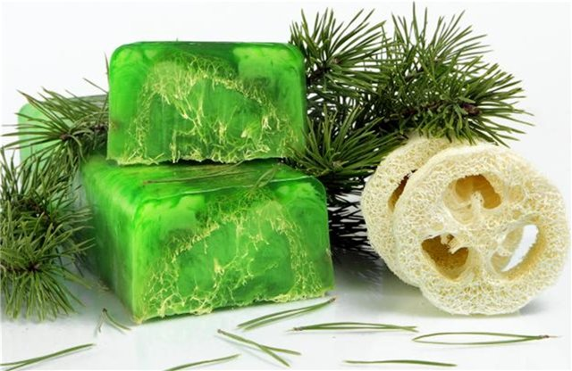

Мыло «Хвойное с люфой»

Описание
Современный человек летом подвержен простудным заболеваниям ничуть не меньше, чем зимой. Стремясь укрыться от изнуряющего зноя, мы так часто прячемся в приятной прохладе кондиционированного помещения, а желая утолить жажду, используем ледяные напитки. Как следствие - ОРВИ, ангина и прочие аналогичные напасти. Закалить свой организм и усилить иммунитет помогают различные профилактические мероприятия. Ароматерапия занимает среди них не последнее место. Добавьте в горячую воду несколько капель масла пихты и в течение нескольких минут вдыхайте его аромат. Или просто ежедневно принимайте душ с использованием нашего хвойного мыла, наслаждаясь его смолистым ароматом. Дополнительным преимуществом данного косметического продукта является его потрясающие скрабирующие свойства, обеспечиваемые входящими в состав волокнами люфы.
Состав
- Прозрачная мыльная основа – 100 грамм
- Масло косточки персика или абрикосовой косточки - 1/3 чайной ложки
- Эфирное масло пихта сибирская – 10-15 капель
- Люфа молотая 1-2 чайные ложки
- Краситель пищевой гелевый зеленый - 2-3 капли
- Форма прямоугольник
Рецепт
- Растопите мыльную основу в микроволновой печи, на водяной бане или, используя специально предназначенный для этого прибор.
- Добавьте в основу краситель и измельченную люфу. Тщательно перемешайте.
- Дайте основе немного остыть. Не дожидаясь появления на мыле пленки, добавьте базовое и эфирное масло. Перемешайте.
- Перелейте мыло в форму и оставьте его остывать при комнатной температуре.
- Выньте мыло из формы. Оно готово!